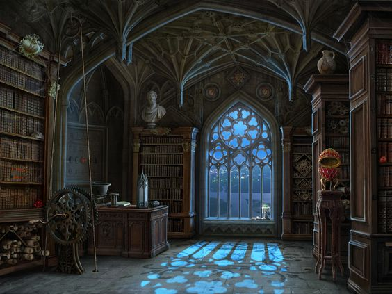

Mistérios da Mansão Esquecida

Você decide explorar o salão de baile, uma grande sala decorada com
lustres antigos e móveis cobertos por lençóis empoeirados. No centro do
salão, há um tabuleiro de xadrez coberto por uma fina camada de poeira. Ao
inspecionar mais de perto, você percebe que as peças estão dispostas de
maneira estranha. Você logo percebe que o arranjo das peças de xadrez é na
verdade um código que deve ser decifrado. Você precisa usar as pistas
espalhadas pela sala para decifrar o código e abrir uma passagem secreta
que leva a outros locais da mansão. Mas você deve ser rápido, pois o tempo
está se esgotando e algo misterioso pode estar se aproximando.